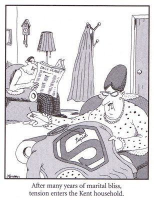

My name is Victoria Brunner (the one on the right). When I was younger, I really really really really wanted to be a stand-up comedian. But everybody laughed at me. I'm finally doing what I always wanted to do, but nobody's laughing now.
In the words of my little brother, Nobody laughs when I try to make them, but everybody laughs at me when I'm
just doing my thing.
He's crazy. We all are. If you look up, you'll see a picture of me and two of my brothers looking
pretty cool. This is not how we usually look. To see how we usually look, Check out my blog!
There are a lot of bad jokes on this page - brace yourself for another one! My family loves Far Side Comics, and here is one of our favorites:
Let me tell you a little bit more about my family. I have 2 wonderful parents, 6 brothers, and 2 freaky dogs (they're just weird). I always thought having so many siblings was relatively normal, but when I tell people that, they usually act really surprised and ask if they heard me right. I say yes. So now, I'm starting to get the idea that maybe it isn't so normal. Here's a chart to answer questions about my brothers that I get asked the most.
| THE SUPER SIX | |||||
|---|---|---|---|---|---|
| NAME | FAVORITE NOODLE | AGE | GRADE | SPORT | FUN FACT |
| Jacob | Ramen | 17 | 11th | xc | just got wisdom teeth taken out |
| Thomas | Spaghetti | 15 | 10th | xc | has very voluminous hair |
| Matthew | Bowties | 13 | 8th | xc | owns Heelys |
| Mark William | Scooby-Doo shaped | 11 | 5th | soccer | writes comic books |
| Lucas | Macaroni | 9 | 3rd | soccer | is allergic to shellfish |
| Zachary | Corkscrews | 6 | 1st | soccer | speaks Chinese |
Hey! You're still here!
And after I played that cruel trick on you.I'm sorry, the Gaston song is copyrighted. Look it up on youtube if you want to hear the real
thing, but copyright-free music is still pretty cool, right?!
If you just cant get enough of these shenanigans, you should Check out my blog!
Anyway. Since you're still here, I guess I'll tell you another story. Once, in 8th grade, I was messing around in science. Great start, right?
No, I didn't "have chemistry" with some boy. Hahahaha.
No.
But I was very attracted to this hole puncher.
And I tried to hole punch my hair. So I ended up giving myself a trim with a hole puncher. Yeah, I know what you're thinking. Cool story bro. And speaking of hole punchers,
it was recently the 131st birthday of the hole puncher! Get off this webpage and go celebrate!
Psssst you should Check out my blog!
If you can still see me, you should Check out my blog!